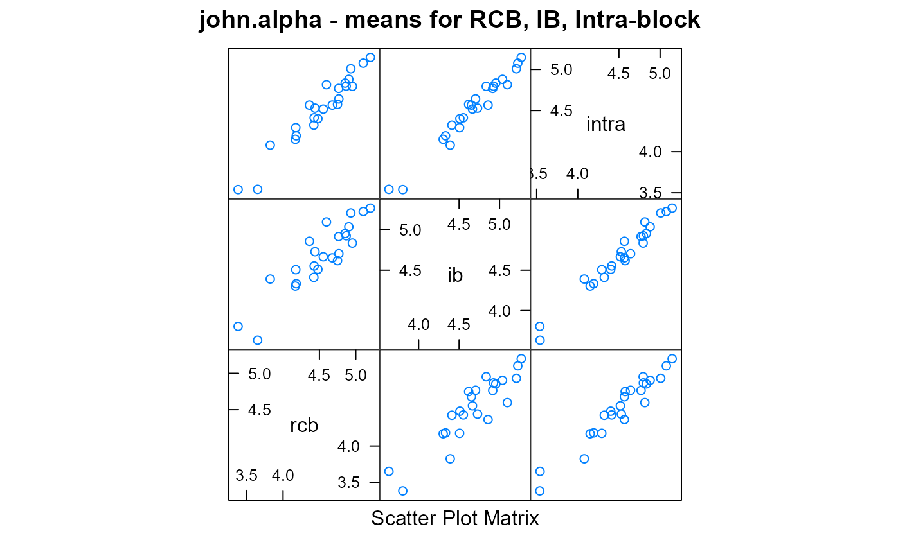

john.alpha.RdAlpha lattice design of spring oats
A data frame with 72 observations on the following 5 variables.
plotplot number
repreplicate
blockincomplete block
gengenotype (variety)
yielddry matter yield (tonnes/ha)
rowRow ordinate
colColumn ordinate
A spring oats trial grown in Craibstone, near Aberdeen. There were 24 varieties in 3 replicates, each consisting of 6 incomplete blocks of 4 plots. Planted in a resolvable alpha design.
Caution: Note that the table on page 146 of John & Williams (1995) is NOT the physical layout. The plots were laid out in a single line.
J. A. John & E. R. Williams (1995). Cyclic and computer generated designs. Chapman and Hall, London. Page 146.
Piepho, H.P. and Mohring, J. (2007), Computing heritability and selection response from unbalanced plant breeding trials. Genetics, 177, 1881-1888. https://doi.org/10.1534/genetics.107.074229
Paul Schmidt, Jens Hartung, Jörn Bennewitz, and Hans-Peter Piepho (2019). Heritability in Plant Breeding on a Genotype-Difference Basis. Genetics, 212, 991-1008. https://doi.org/10.1534/genetics.119.302134
# \dontrun{
library(agridat)
data(john.alpha)
dat <- john.alpha
# RCB (no incomplete block)
m0 <- lm(yield ~ 0 + gen + rep, data=dat)
# Block fixed (intra-block analysis) (bottom of table 7.4 in John)
m1 <- lm(yield ~ 0 + gen + rep + rep:block, dat)
anova(m1)
#> Analysis of Variance Table
#>
#> Response: yield
#> Df Sum Sq Mean Sq F value Pr(>F)
#> gen 24 1458.83 60.785 728.2829 < 2.2e-16 ***
#> rep 2 6.14 3.068 36.7557 6.593e-09 ***
#> rep:block 15 3.60 0.240 2.8784 0.006255 **
#> Residuals 31 2.59 0.083
#> ---
#> Signif. codes: 0 '***' 0.001 '**' 0.01 '*' 0.05 '.' 0.1 ' ' 1
# Block random (combined inter-intra block analysis)
libs(lme4, lucid)
m2 <- lmer(yield ~ 0 + gen + rep + (1|rep:block), dat)
anova(m2)
#> Analysis of Variance Table
#> npar Sum Sq Mean Sq F value
#> gen 24 380.44 15.8515 185.9959
#> rep 2 1.57 0.7851 9.2124
## Analysis of Variance Table
## Df Sum Sq Mean Sq F value
## gen 24 380.43 15.8513 185.9942
## rep 2 1.57 0.7851 9.2123
vc(m2)
#> grp var1 var2 vcov sdcor
#> rep:block (Intercept) <NA> 0.06194 0.2489
#> Residual <NA> <NA> 0.08523 0.2919
## grp var1 var2 vcov sdcor
## rep:block (Intercept) <NA> 0.06194 0.2489
## Residual <NA> <NA> 0.08523 0.2919
# Variety means. John and Williams table 7.5. Slight, constant
# difference for each method as compared to John and Williams.
means <- data.frame(rcb=coef(m0)[1:24],
ib=coef(m1)[1:24],
intra=fixef(m2)[1:24])
head(means)
#> rcb ib intra
#> genG01 5.201233 5.268742 5.146433
#> genG02 4.552933 4.665389 4.517265
#> genG03 3.381800 3.803790 3.537933
#> genG04 4.439400 4.728175 4.528828
#> genG05 5.103100 5.225708 5.075944
#> genG06 4.749067 4.618234 4.575395
## rcb ib intra
## genG01 5.201233 5.268742 5.146433
## genG02 4.552933 4.665389 4.517265
## genG03 3.381800 3.803790 3.537934
## genG04 4.439400 4.728175 4.528828
## genG05 5.103100 5.225708 5.075944
## genG06 4.749067 4.618234 4.575394
libs(lattice)
splom(means, main="john.alpha - means for RCB, IB, Intra-block")

# ----------
# asreml4
libs(asreml,lucid)
# Heritability calculation of Piepho & Mohring, Example 1
m3 <- asreml(yield ~ 1 + rep, data=dat, random=~ gen + rep:block)
#> Model fitted using the gamma parameterization.
#> ASReml 4.1.0 Fri Dec 17 15:17:39 2021
#> LogLik Sigma2 DF wall cpu
#> 1 7.34791 0.221592 69 15:17:39 0.0
#> 2 12.08376 0.156976 69 15:17:39 0.0
#> 3 15.53184 0.110746 69 15:17:39 0.0
#> 4 16.65758 0.089647 69 15:17:39 0.0
#> 5 16.80904 0.081946 69 15:17:39 0.0
#> 6 16.80985 0.081598 69 15:17:39 0.0
sg2 <- summary(m3)$varcomp['gen','component'] # .142902
# Average variance of a difference of two adjusted means (BLUP)
p3 <- predict(m3, data=dat, classify="gen", sed=TRUE)
#> Model fitted using the gamma parameterization.
#> ASReml 4.1.0 Fri Dec 17 15:17:39 2021
#> LogLik Sigma2 DF wall cpu
#> 1 16.8098 0.0816175 69 15:17:39 0.0
#> 2 16.8098 0.0816174 69 15:17:39 0.0
#> 3 16.8098 0.0816172 69 15:17:39 0.0
# Matrix of pair-wise SED values, squared
vdiff <- p3$sed^2
# Average variance of two DIFFERENT means (using lower triangular of vdiff)
vblup <- mean(vdiff[lower.tri(vdiff)]) # .05455038
# Note that without sed=TRUE, asreml reports square root of the average variance
# of a difference between the variety means, so the following gives the same value
# predict(m3, data=dat, classify="gen")$avsed ^ 2 # .05455038
# Average variance of a difference of two adjusted means (BLUE)
m4 <- asreml(yield ~ 1 + gen + rep, data=dat, random = ~ rep:block)
#> Model fitted using the gamma parameterization.
#> ASReml 4.1.0 Fri Dec 17 15:17:39 2021
#> LogLik Sigma2 DF wall cpu
#> 1 8.27642 0.119546 46 15:17:39 0.0
#> 2 8.94241 0.108572 46 15:17:39 0.0
#> 3 9.53543 0.096936 46 15:17:39 0.0
#> 4 9.80736 0.087555 46 15:17:39 0.0
#> 5 9.82176 0.085478 46 15:17:39 0.0
#> 6 9.82194 0.085243 46 15:17:39 0.0
p4 <- predict(m4, data=dat, classify="gen", sed=TRUE)
#> Model fitted using the gamma parameterization.
#> ASReml 4.1.0 Fri Dec 17 15:17:39 2021
#> LogLik Sigma2 DF wall cpu
#> 1 9.82194 0.0852263 46 15:17:39 0.0
#> 2 9.82194 0.0852260 46 15:17:39 0.0
#> 3 9.82194 0.0852252 46 15:17:39 0.0
vdiff <- p4$sed^2
vblue <- mean(vdiff[lower.tri(vdiff)]) # .07010875
# Again, could use predict(m4, data=dat, classify="gen")$avsed ^ 2
# H^2 Ad-hoc measure of heritability
sg2 / (sg2 + vblue/2) # .803
#> [1] 0.8029759
# H^2c Similar measure proposed by Cullis.
1-(vblup / (2*sg2)) # .809
#> [1] 0.8090841
# ----------
# lme4 to calculate Cullis H2
# https://stackoverflow.com/questions/38697477
libs(lme4)
cov2sed <- function(x){
# Convert var-cov matrix to SED matrix
# sed[i,j] = sqrt( x[i,i] + x[j,j]- 2*x[i,j] )
n <- nrow(x)
vars <- diag(x)
sed <- sqrt( matrix(vars, n, n, byrow=TRUE) +
matrix(vars, n, n, byrow=FALSE) - 2*x )
diag(sed) <- 0
return(sed)
}
# Same as asreml model m4. Note 'gen' must be first term
m5blue <- lmer(yield ~ 0 + gen + rep + (1|rep:block), dat)
libs(emmeans)
#> Warning: package 'emmeans' was built under R version 4.1.2
ls5blue <- emmeans(m5blue, "gen")
con <- ls5blue@linfct[,1:24] # contrast matrix for genotypes
# The 'con' matrix is identity diagonal, so we don't need to multiply,
# but do so for a generic approach
# sed5blue <- cov2sed(con
tmp <- tcrossprod( crossprod(t(con), vcov(m5blue)[1:24,1:24]), con)
sed5blue <- cov2sed(tmp)
# vblue Average variance of difference between genotypes
vblue <- mean(sed5blue[upper.tri(sed5blue)]^2)
vblue # .07010875 matches 'vblue' from asreml
#> [1] 0.07010875
# Now blups
m5blup <- lmer(yield ~ 0 + (1|gen) + rep + (1|rep:block), dat)
# Need lme4::ranef in case ordinal is loaded
re5 <- lme4::ranef(m5blup,condVar=TRUE)
vv1 <- attr(re5$gen,"postVar")
vblup <- 2*mean(vv1) # .0577 not exactly same as 'vblup' above
vblup
#> [1] 0.0577334
# H^2 Ad-hoc measure of heritability
sg2 <- c(lme4::VarCorr(m5blup)[["gen"]]) # 0.142902
sg2 / (sg2 + vblue/2) # .803 matches asreml
#> [1] 0.8030173
# H^2c Similar measure proposed by Cullis.
1-(vblup / 2 / sg2) # .809 from asreml, .800 from lme4
#> [1] 0.7979969
# ----------
# Sommer to calculate Cullis H2
libs(sommer)
m2.ran <- mmer(fixed = yield ~ rep,
random = ~ gen + rep:block,
data = dat)
#> Version out of date. Please update sommer to the newest version using:
#> install.packages('sommer') in a new session
#> Use the 'date.warning' argument to disable the warning message.iteration LogLik wall cpu(sec) restrained
#> 1 -19.4174 15:17:39 0 0
#> 2 -14.1597 15:17:39 0 0
#> 3 -12.6451 15:17:39 0 0
#> 4 -12.5508 15:17:39 0 0
#> 5 -12.5506 15:17:39 0 0
vc_g <- m2.ran$sigma$gen # genetic variance component
n_g <- n_distinct(dat$gen) # number of genotypes
C22_g <- m2.ran$PevU$gen$yield # Prediction error variance matrix for genotypic BLUPs
trC22_g <- sum(diag(C22_g)) # trace
# Mean variance of a difference between genotypic BLUPs. Smith eqn 26
# I do not see the algebraic reason for this...2
av2 <- 2/n_g * (trC22_g - (sum(C22_g)-trC22_g) / (n_g-1))
### H2 Cullis
1-(av2 / (2 * vc_g)) #0.8091
#> yield
#> yield 0.8091431
# }